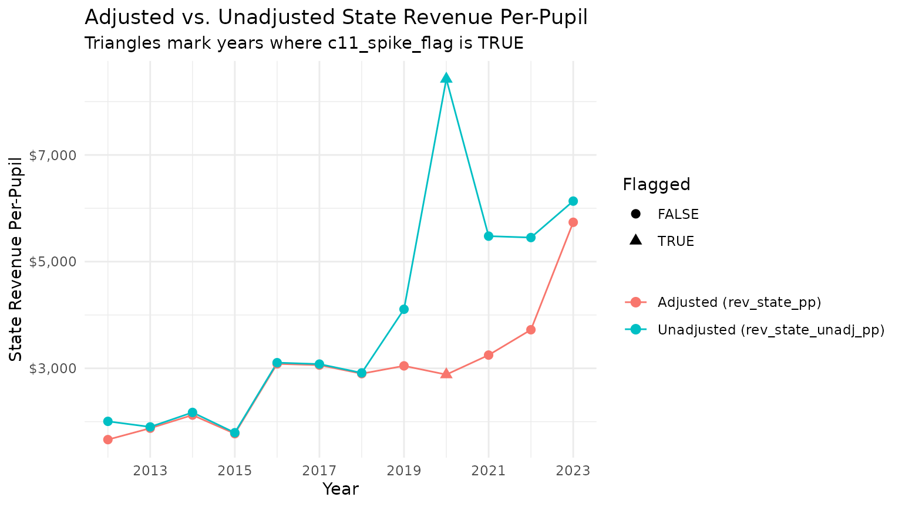
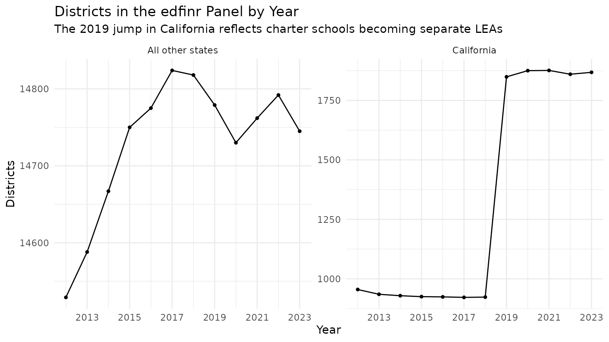

Introduction
School finance data are messy in ways that summary statistics hide:
districts might skip survey items, states change how they report aid,
and the set of districts in the panel shifts over time.
edfinr ships several diagnostic variables that make these
issues visible, and this article shows how to use them. If you plan to
rank districts, build a time series, or compare states, read this
first.
The examples below use the full national panel:
us <- get_finance_data(yr = "all", geo = "all", dataset_type = "skinny")
NA is not zero
Some F-33 items were originally coded -1 or
-2 to indicate missing values; edfinr recodes
these to NA during processing. An NA therefore
means the item was not reported, not that the district
spent or received nothing. Dropping NAs silently (for
example, with na.rm = TRUE in a ranking) keeps
incompletely-reporting districts in your analysis with partial values,
which can be worse than excluding them; decide explicitly.
Since 0.2.0, edfinr also detects a second F-33
missingness convention: some items are zero-filled when
missing, with a companion data-item flag (FL_* = "M")
marking them unreported. The cleaning step converts these flagged
zero-fills to NA for the COVID (exp_covid_*),
capital-detail, debt, fund-balance, CE fund-type, and expenditure-detail
items. The largest effect is on the COVID columns: all of New York
(including NYC) in every year and roughly a third to half of California
districts from FY2021 onward never reported them, and those districts
previously appeared as spending exactly $0. Genuine reported zeros are
preserved. Missingness also propagates through derived
measures rather than being treated as zero. The share of district-years
affected varies by column:
us |>
group_by(year) |>
summarize(
n = n(),
pct_na_exp_cur = round(100 * mean(is.na(exp_cur_total)), 1),
pct_na_cap = round(100 * mean(is.na(exp_cap_total)), 1),
.groups = "drop"
)## # A tibble: 12 × 4
## year n pct_na_exp_cur pct_na_cap
## <int> <int> <dbl> <dbl>
## 1 2012 15484 0 0
## 2 2013 15523 0 0
## 3 2014 15596 0 0
## 4 2015 15675 0 0
## 5 2016 15699 0 0
## 6 2017 15746 0 0
## 7 2018 15741 0 0
## 8 2019 16628 0 0
## 9 2020 16605 0 0
## 10 2021 16638 0 0
## 11 2022 16652 0 0
## 12 2023 16613 0 0exp_cur_total is near-fully populated in every year: it
is sourced from the F-33 summary item TCURELSC, not from the ESSA
fund-type items (CE1/CE2/CE3), which whole states skip and which only
begin in FY2016 (CE3, exp_cur_resa, in FY2018). The
fund-type components (exp_cur_st_loc,
exp_cur_fed, exp_cur_resa) do carry those
coverage boundaries; the dictionary’s first_yr_avail column
records them (see “Variable availability by year” below). Summary items
like TCURELSC carry no data-item flags, so the flag-aware cleaning above
cannot detect zero-filled missingness there – another reason to treat
exact zeros in totals with mild suspicion.
The state-revenue adjustment and c11_spike_flag
Following the EdBuild methodology, edfinr nets capital
and debt-related state aid (F-33 item C11) out of
rev_state, so that rev_state approximates
operating support. The pre-adjustment values are preserved in
rev_state_unadj and rev_state_unadj_pp, and
the netted-out C11 amount itself ships as
rev_state_cap_debt (in both datasets), so the adjustment
can be reconstructed directly:
rev_state_unadj - rev_state_cap_debt - rev_state equals the
state share of the other-system-payment adjustment. Because
rev_state_cap_debt feeds the adjustment arithmetic, it is
zero-filled, not NA, where districts did not report.
The identity is easiest to see in districts where the adjustment is
large. Here are the three Ohio districts with the most state capital and
debt aid in FY2023; the residual after subtracting
rev_state_cap_debt and rev_state from the
unadjusted total is the state share of the other-system-payment
adjustment:
us |>
filter(year == 2023, state == "OH") |>
slice_max(rev_state_cap_debt, n = 3) |>
select(dist_name, rev_state_unadj, rev_state_cap_debt, rev_state) |>
mutate(state_share_osp = rev_state_unadj - rev_state_cap_debt - rev_state)## # A tibble: 3 × 5
## dist_name rev_state_unadj rev_state_cap_debt rev_state state_share_osp
## <chr> <dbl> <dbl> <dbl> <dbl>
## 1 Chesapeake Union… 10732000 235000 10427315. 69685.
## 2 Painesville City… 31551000 230000 31200269. 120731.
## 3 Wauseon Exempted… 12696000 216000 12474912. 5088.In a small number of district-years, the C11 adjustment produces an
anomalous spike – typically when a large one-time capital grant flows
through – and c11_spike_flag marks them:
## # A tibble: 12 × 2
## year flagged
## <int> <int>
## 1 2012 58
## 2 2013 54
## 3 2014 47
## 4 2015 49
## 5 2016 42
## 6 2017 34
## 7 2018 24
## 8 2019 26
## 9 2020 37
## 10 2021 44
## 11 2022 23
## 12 2023 36
# which states account for the most flagged district-years?
us |>
filter(c11_spike_flag) |>
count(state, sort = TRUE) |>
head(10)## # A tibble: 10 × 2
## state n
## <chr> <int>
## 1 MA 105
## 2 CO 102
## 3 CA 68
## 4 PA 60
## 5 WY 32
## 6 IL 22
## 7 CT 17
## 8 GA 14
## 9 NJ 10
## 10 AK 7For a flagged district, the adjusted state-revenue series can dip or jump in ways the unadjusted series does not. Comparing the two makes the artifact obvious. Here we pick the largest district with multiple flagged years:
example_id <- us |>
filter(c11_spike_flag) |>
count(ncesid, wt = enroll, sort = TRUE) |>
slice(1) |>
pull(ncesid)
us |>
filter(ncesid == example_id) |>
select(year, dist_name, c11_spike_flag, rev_state_pp, rev_state_unadj_pp) |>
pivot_longer(
cols = c(rev_state_pp, rev_state_unadj_pp),
names_to = "series", values_to = "value"
) |>
mutate(series = ifelse(
series == "rev_state_pp", "Adjusted (rev_state_pp)", "Unadjusted (rev_state_unadj_pp)"
)) |>
ggplot(aes(x = year, y = value, color = series)) +
geom_line() +
geom_point(aes(shape = c11_spike_flag), size = 2.5) +
scale_x_continuous(breaks = seq(2013, 2023, 2)) +
scale_y_continuous(labels = scales::label_dollar()) +
scale_shape_manual(values = c(`FALSE` = 16, `TRUE` = 17)) +
labs(
title = "Adjusted vs. Unadjusted State Revenue Per-Pupil",
subtitle = "Triangles mark years where c11_spike_flag is TRUE",
x = "Year", y = "State Revenue Per-Pupil",
color = NULL, shape = "Flagged"
) +
theme_minimal()
Practical guidance: when analyzing state revenue over time, check
c11_spike_flag for your districts of interest, inspect
rev_state_cap_debt to see how large the adjustment actually
is, and consider using rev_state_unadj_pp (or excluding
flagged years) where the adjustment dominates the series.
Pass-through districts and osp_pct
Some districts pass a large share of the revenue they receive on to
other school systems (charter schools, other LEAs, private placements).
edfinr proportionally subtracts these payments from
revenues, and osp_pct reports the share of unadjusted total
revenue paid to other systems, so you can see how much the adjustment
matters for any district:
us_2023 <- us |> filter(year == 2023)
# how common are large pass-through shares?
us_2023 |>
summarize(
n = sum(!is.na(osp_pct)),
over_10_pct = sum(osp_pct > 0.10, na.rm = TRUE),
over_25_pct = sum(osp_pct > 0.25, na.rm = TRUE)
)## # A tibble: 1 × 3
## n over_10_pct over_25_pct
## <int> <int> <int>
## 1 16613 1028 230
# the largest pass-through districts, among districts with 1,000+ students
us_2023 |>
filter(enroll >= 1000) |>
arrange(desc(osp_pct)) |>
select(dist_name, state, enroll, osp_pct, rev_total_pp) |>
head(10)## # A tibble: 10 × 5
## dist_name state enroll osp_pct rev_total_pp
## <chr> <chr> <dbl> <dbl> <dbl>
## 1 Orleans Parish LA 2040 0.760 85246.
## 2 Mitchell Sd 55 OR 1027 0.718 3731.
## 3 Mount Pleasant Elementary CA 1648 0.697 14303.
## 4 Santiam Canyon Sd 129j OR 2617 0.637 5244.
## 5 Prairie City Sd 4 OR 1089 0.532 6754.
## 6 Taconic And Green Regional School District… VT 1643 0.521 10670.
## 7 Grandview R-Ii MO 2387 0.500 5146.
## 8 Scio Sd 95 OR 1688 0.489 7826.
## 9 Chester-Upland Sd PA 3100 0.487 24554.
## 10 Sturgeon R-V MO 1445 0.483 5108.For high-osp_pct districts, per-pupil figures describe
the students the district serves directly, after the pass-through
dollars are removed. When your question concerns all dollars a district
handles, use the rev_*_unadj variables instead.
One caution: unlike the flag-cleaned expenditure items above,
osp_pct and the underlying exp_pay_* columns
deliberately retain zero-filled values where states did not report,
because they feed the revenue-adjustment arithmetic. An
osp_pct of exactly zero can therefore mean either no
pass-through or no report.
Panel composition: districts enter and exit
The set of districts is not constant across years, and treating the panel as balanced will bias trend analyses. The largest single discontinuity is California: beginning in school year 2018-19, a wave of California charter schools switched to independent reporting and were assigned their own NCES LEA IDs for the first time. Once in the NCES LEA universe, those new charter-LEAs automatically show up in the F-33 finance survey and in the Census SAIPE and ACS school-district products, which mirror NCES LEA boundaries. The result is a jump in California district counts from 2019 onward that reflects reporting structure, not new schools:
us |>
mutate(group = ifelse(state == "CA", "California", "All other states")) |>
count(group, year) |>
ggplot(aes(x = year, y = n)) +
geom_line() +
geom_point(size = 1) +
facet_wrap(~group, scales = "free_y") +
scale_x_continuous(breaks = seq(2013, 2023, 2)) +
labs(
title = "Districts in the edfinr Panel by Year",
subtitle = "The 2019 jump in California reflects charter schools becoming separate LEAs",
x = "Year", y = "Districts"
) +
theme_minimal()
For longitudinal work, consider a consistent sample: keep only districts present in every year of your window.
window <- us |> filter(year >= 2019)
consistent_ids <- window |>
count(ncesid) |>
filter(n == n_distinct(window$year)) |>
pull(ncesid)
length(consistent_ids)## [1] 16104Two 0.2.0 changes also altered the panel’s composition relative to
earlier releases. First, directory attributes (name, county, LEA type,
urbanicity) now come from the same school year as the fiscal year they
describe rather than the following year’s vintage; among other effects,
this restored the final operating year of districts that closed, which
earlier releases silently dropped. Second, Massachusetts regional school
districts, which CCD miscoded as service agencies for the SY2011-12
through SY2015-16 directory vintages, are restored for FY2012-FY2015 via
a vetted list of 60 districts covering roughly 107,000-110,000 students
per year. One trap comes with the restoration: those rows (and the
FY2016 rows) carry lea_type_id 4 (“Service agency”) because
the package reports what the source vintage said, so filtering
Massachusetts years 2012-2016 on lea_type_id will drop real
regional districts. Row counts rise slightly in every year relative to
0.1.x.
Also remember that edfinr excludes some districts by
construction (invalid LEA types, extreme per-pupil revenue, zero or
negative enrollment or revenue); the “Data Sources and Methodology”
vignette documents the exclusion rules.
Variable availability by year
Not every variable spans the full 2012-2023 panel. The dictionary’s
first_yr_avail column records when each variable
enters:
list_variables("full") |>
filter(first_yr_avail != "2012") |>
select(name, first_yr_avail, description) |>
arrange(first_yr_avail, name) |>
knitr::kable()| name | first_yr_avail | description |
|---|---|---|
| cwift_est | 2015 | Comparable Wage Index for Teachers estimate (LEA_CWIFTEST) |
| cwift_impute_method | 2015 | CWIFT imputation method: observed / interpolated_2019_2021 / carried_forward_2022 |
| cwift_imputed | 2015 | TRUE if the CWIFT value is imputed (interpolated or carried forward) |
| cwift_se | 2015 | Standard error of the CWIFT estimate (approximate for interpolated years) |
| exp_tech_equip | 2015 | Technology-related equipment (K14) |
| exp_tech_supp | 2015 | Technology-related supplies and purchased services (V02) |
| exp_utilities | 2015 | Utilities and energy services (V95) |
| exp_cur_fed | 2016 | Current expenditure from federal sources (ESSA item CE2; NA where the state did not report the fund-type split) |
| exp_cur_st_loc | 2016 | Current expenditure from state/local sources (ESSA item CE1; NA where the state did not report the fund-type split) |
| exp_cur_resa | 2018 | Current expenditure by RESA on behalf of LEAs (ESSA item CE3; NA where the state did not report the fund-type split) |
| exp_covid_cap_out | 2020 | COVID-19 Federal Assistance Funds - Capital outlay expenditures (AE4) |
| exp_covid_instr | 2020 | COVID-19 Federal Assistance Funds - Instructional expenditures (AE2) |
| exp_covid_supp | 2020 | COVID-19 Federal Assistance Funds - Support services expenditures (AE3) |
| exp_covid_tech_equip | 2020 | COVID-19 Federal Assistance Funds - Technology-related equipment expenditures (AE6) |
| exp_covid_tech_supp | 2020 | COVID-19 Federal Assistance Funds - Technology-related supplies and purchased services expenditures (AE5) |
| exp_covid_total | 2020 | COVID-19 Federal Assistance Funds - Total expenditures (AE1); NA where districts did not report the COVID items (all of NY in every year; roughly a third to half of CA districts from FY21) |
| exp_covid_food | 2021 | COVID-19 Federal Assistance Funds - Food services operations (AE8) |
| exp_covid_supp_plant | 2021 | COVID-19 Federal Assistance Funds - Support services operation and maintenance of plant expenditures (AE7) |
A multi-year average or trend that crosses one of these boundaries will mix real change with a coverage change. CWIFT adds a further wrinkle: FY2020 and FY2023 values are imputed rather than observed (see the “CWIFT” article).
Urbanicity: condensed vs. raw locale codes
The urbanicity factor condenses the NCES urban-centric
locale codes into four categories (City, Suburb, Town, Rural). The raw
12-category codes are also available as urbanicity_raw
(numeric) and urbanicity_raw_cat (labeled factor):
## # A tibble: 12 × 3
## urbanicity_raw_cat urbanicity n
## <fct> <fct> <int>
## 1 City, Large City 1707
## 2 City, Midsize City 458
## 3 City, Small City 656
## 4 Suburb, Large Suburb 3249
## 5 Suburb, Midsize Suburb 423
## 6 Suburb, Small Suburb 292
## 7 Town, Fringe Town 550
## 8 Town, Distant Town 1190
## 9 Town, Remote Town 789
## 10 Rural, Fringe Rural 1925
## 11 Rural, Distant Rural 3078
## 12 Rural, Remote Rural 2296The condensed categories are right for most summaries, but the raw codes matter when the distinction within a category is the point – for example, “Rural: Fringe” districts sit at metro edges and often look more like suburbs than like “Rural: Remote” districts.
Comparability checklist
Before publishing numbers built on edfinr data:
-
Check missingness for your variables and years;
decide explicitly how to treat
NAdistrict-years rather than relying onna.rm = TRUE. -
Check
first_yr_availfor every variable in a multi-year analysis. -
Check
c11_spike_flag(and compare againstrev_state_unadj_pp) when state revenue is central to the analysis. -
Check
osp_pctwhen high-pass-through districts could distort per-pupil comparisons. - Use a consistent sample (or justify not doing so) for trend analyses, especially any that include California.
- Use CPI adjustment for any multi-year dollar comparison (see the “CPI Adjustments” vignette), and remember debt and fund-balance stocks stay nominal.